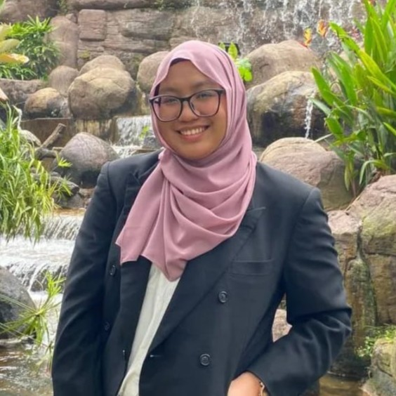
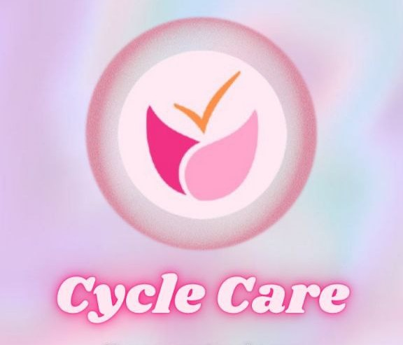
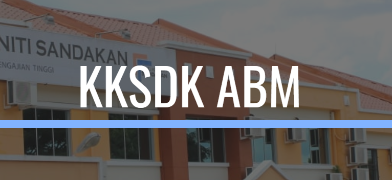
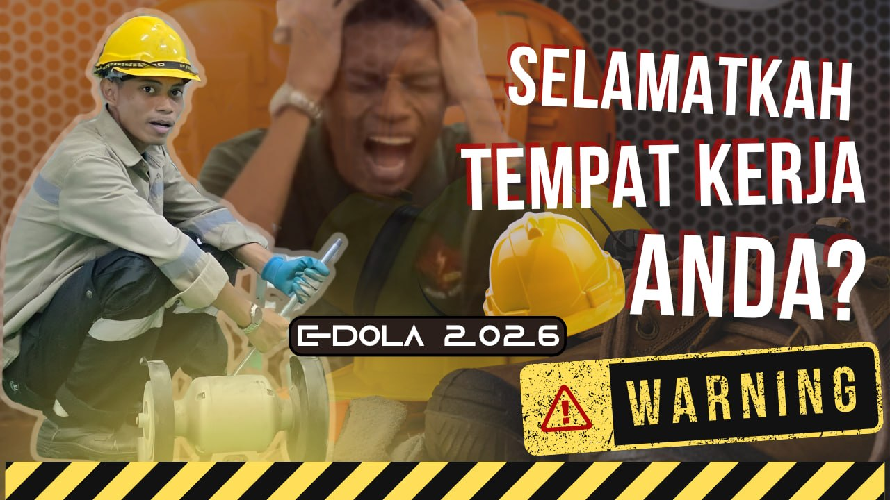
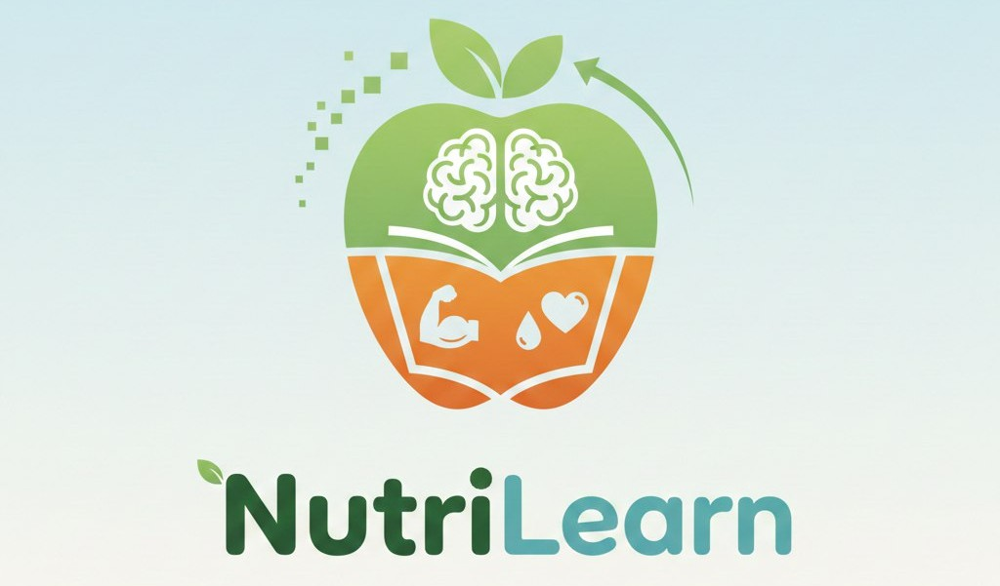
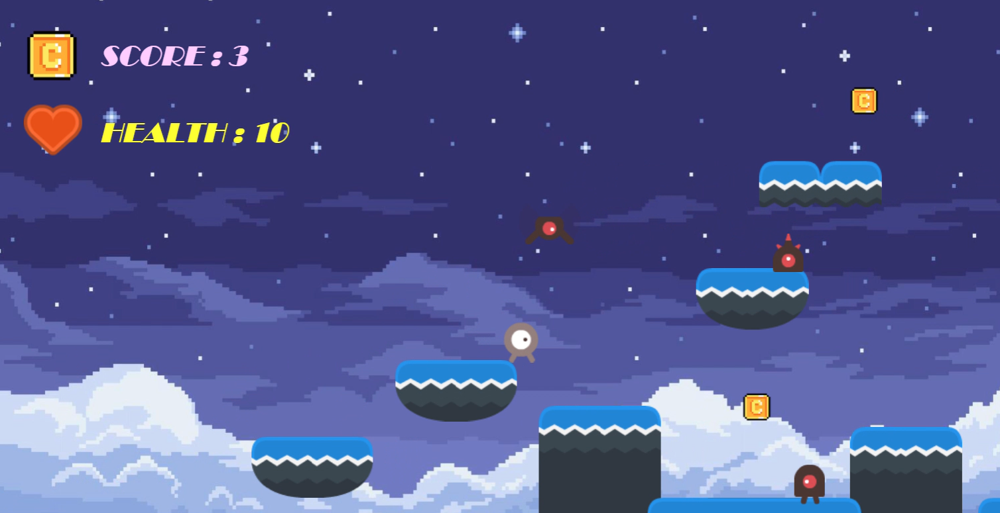
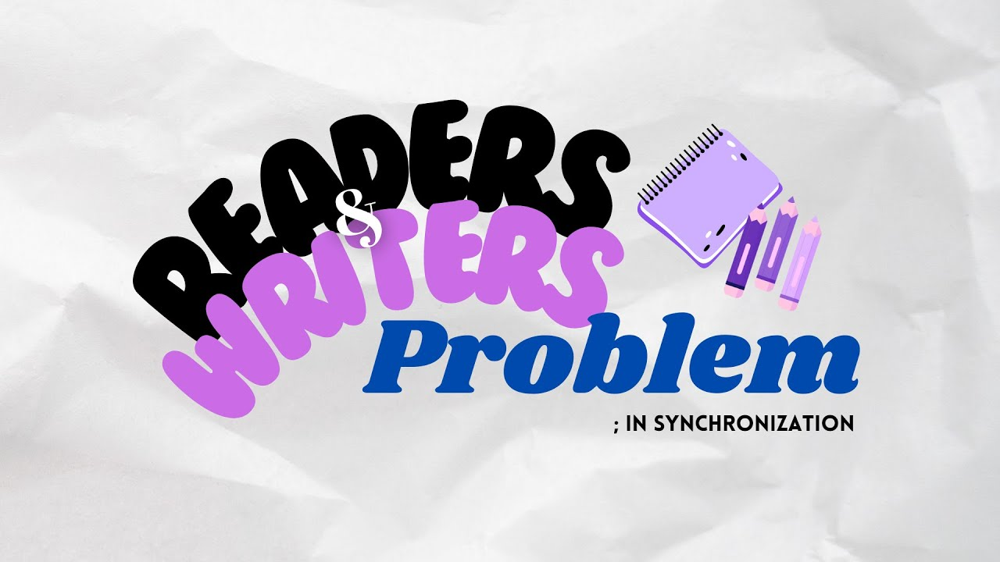

Web/Software Development | UI/UX Design | Digital Solutions
Download CVI am a Bachelor's Degree in Computer Science (Hons.) Multimedia Computing graduate from UiTM. I have strong passion in software development, UI/UX design, and digital solutions.
During my journey as a university student, I experienced in developing a variety of websites, applications, and softwares along with coordinating databases, designing UI/UX and analyzing data. Other than that, I also familiarize with artificial intelligence concepts and virtual reality during my studies.
I am currently looking for opportunities to apply my technical knowledge and skills, along with continuing to improve and learn professionally in this field.
Bachelor of Computer Science (Hons) Multimedia Computing
UiTM Shah Alam
Diploma in Computer Science
UiTM Kampus Samarahan 2, Sarawak
Secondary School (SPM)
MRSM Tun Mohammad Fuad Stephens, Sandakan
Sandakan, Sabah
Assisted with ICT-related technical support, troubleshooting, and equipment setup for staff and unit activities.
Sandakan, Sabah
Assisted in maintaining computer labs, troubleshooting hardware/software issues, and supporting staff and students with necessities related to ICT.

A mobile application that recommends activities to help women with irregular cycles achieve a normal cycle.

An internship project which is a web-based platform to centralize departmental asset applications and automate data collection, reducing reliance on manual Excel spreadsheet submissions.

Collaborated in the production and editing of an educational video titled “Bahaya, Hazard & Risiko” for eDOLA 2026 as a co-editor.

An application-based educational platform for learning about nutrition from a food pyramid.

Simple mini game where a player collect coins to win while avoiding obstacles.

An independent video production to educate computer science students in a fun and creative way.
I'm currently looking for new opportunities. Feel free to reach out!